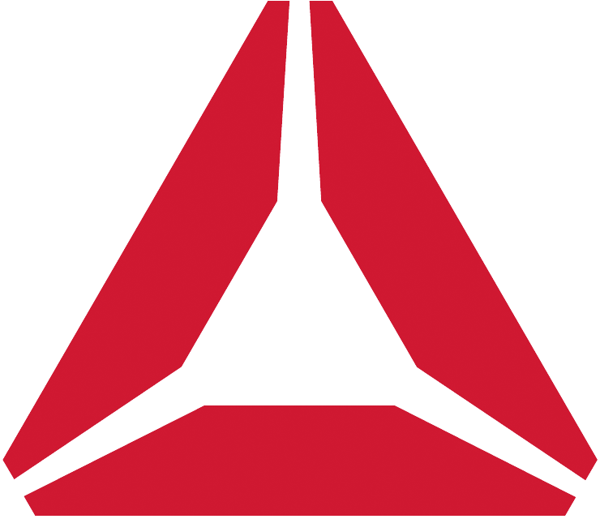

Reebok Pump
The Reebok Pump is a line of athletic shoes that was first released on 24 November 1989 by Reebok. It was the first shoe to have an internal inflation mechanism that regulated a unique fitting cushion in the lower and upper tongue to provide locking around the ankle.
History

In 1988, Design Continuum, an industrial design firm, partnered with Reebok to design a shoe that used inflatable chambers that pump-up for a custom fit, the Reebok Pump. A demo version of the Pump, a customizable inflatable/deflatable high-top shoe, was exhibited at the Sporting Goods Manufacturers' Association in February 1989.On 24 November 1989, the first Reebok Pump was released. That month, Dominique Wilkins was featured on a television commercial introducing the Reebok Pump. Reebok released the Omni Zone, Twilight Zone and the SXT Pump in 1990. That year, Michael Chang's Court Victory Pumps was launched.
.png "Pump")
In February 1991, Dee Brown inflated his Reebok Pumps in front of a national audience before scoring a title-winning dunk during the 1991 NBA Slam Dunk Contest. That year, Pump expanded into cross-training, off-road, golf, walking, aerobics and running shoes. Fullfoot, midfoot, collar, arch, footbed and Dual Chamber support was offered at the time. The pump technology was patented as USPTO #5113599 in May 1992. That year, Shaquille O'Neal was given his own pair of pumps.The Pump Graphlite, a running shoe endorsed by Dan O'Brien and Dave Johnson was released in 1992. That year, the film Juice included a montage of Omar Epps' character trying on different Reebok Pumps before meeting up with Tupac.The Blacktop Model was released in 1991.In 1994, Reebok partnered with Above the Rim, an American drama directed by Jeff Pollack and Tupac to create a full line of shoes named after the movie. That year, the Insta Pump Fury was launched.
Be More Human- Reebok
John Cena wore Pumps as part of his old-school hip hop gimmick in 2004. During the NBA All-Star weekend in 2005, Reebok introduced the ATR (Above the Rim) Pump. Allen Iverson, Yao Ming, Steve Francis, Baron Davis and Jerome Williams showcased the ATR Pump during the NBA All-Star Game 2005. In April 2005, the Pump 2.0 was launched. The following year, Allen Iverson's The Answer IX featured the Pump Auto/Off Smart Valve. The system automatically engaged or deactivated depending on performance needs. The Reebok Pump X MLB, an edition paying homage to Shea Stadium and the Yankee Stadium was released in 2008.Reebok released an original reproduction of The Fury in its 'Black/Citron/Red' colorway and 27 additional collaborative design versions of the shoe for its 20th anniversary in 2014. In September 2014, the Keith Haring x Reebok Classic "Crack is Wack" collection Pumps, named after the 1986 mural, were released. That month, the Reebok Court Victory Pump was re-released.
In 2015, the athletic running shoe ZPump Fusion was introduced, followed by ZPump Fusion 2.0 in 2016 and ZPump Fusion 2.5 later the same year. More or less simultaneous to these three releases, the Nano Pump, Nano Pump 2.0 and Nano Pump 3.0 were released, which are designed for indoor circuit training. Early in 2017, the next athletic iteration of the product line called Pump Plus was released. The Pump Plus extends area covered by inflatable chambers even further and does not require any adjustable lace.
In 2022, Reebok released the Omni Zone II.
25th anniversary
In 2014, Reebok collaborated with various designers to release the 25th anniversary edition Pumps.
- VILLA x Reebok Pump Question
- Bodega x Reebok Pump 25th Anniversary "1989"
- Sneaker Politics x Reebok Pump
- hanon x Reebok Pump
- Kasina x Reebok Pump
- Titolo x Reebok Pump
- 24 Kilates x Reebok Pump
- Social Status x Reebok Pump
- atmos x Reebok Pump
- The Footpatrol x Reebok Pump "G.O.A.T"
- Crossover x Reebok Insta Pump Fury
- Major x Reebok Pump
- mita sneakers x Reebok Pump
- Burn Rubber x Reebok Pump
- INVINCIBLE x Reebok Pump
- CNCPTS x Reebok Pump
- ShoeGallery X Reebok Pump